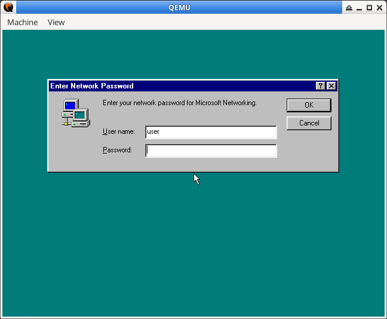
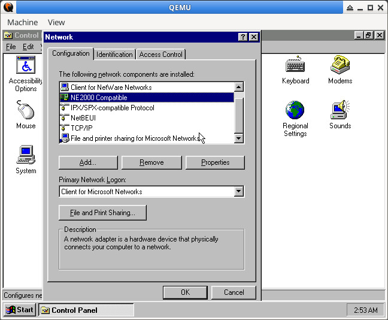
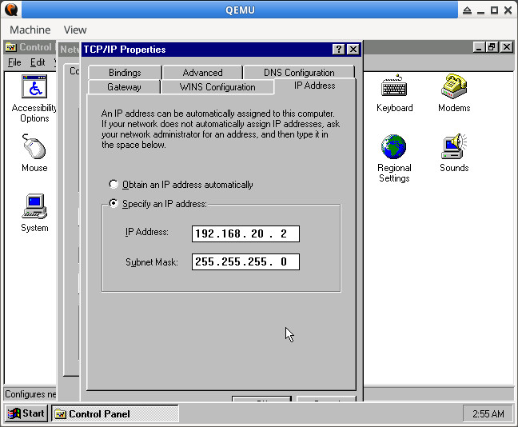
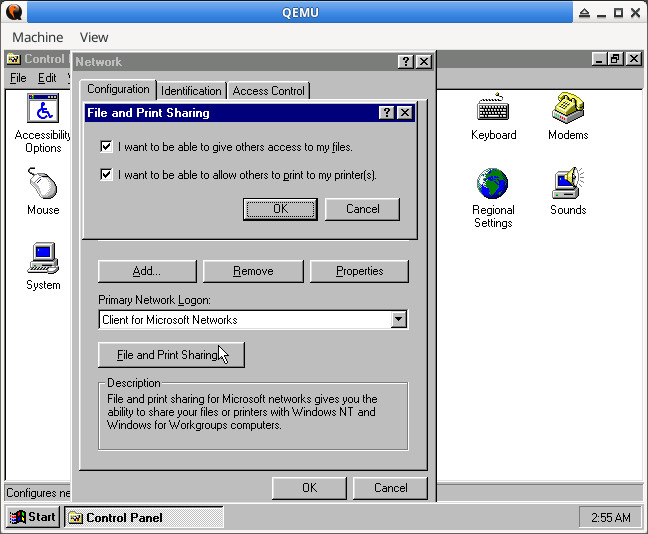
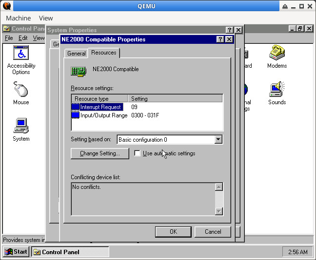
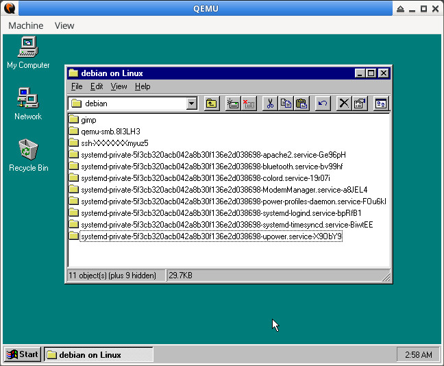

Steward
分享是一種喜悅、更是一種幸福
系統 - Debian - QEMU - 如何在Windows 95透過SAMBA與QEMU傳輸檔案
參考資訊：
https://bbs.archlinux.org/viewtopic.php?id=227970
https://gist.github.com/tinue/9d9ce9c09e9e771169b27f6d0e859c4e
https://wiki.qemu.org/Documentation/GuestOperatingSystems/Windows95
https://alberand.com/host-only-networking-set-up-for-qemu-hypervisor.html
設定網路
$ sudo vim /etc/samba/smb.conf
[global]
workgroup = WORKGROUP
netbios name = Linux
log file = /var/log/samba/log.%m
max log size = 1000
logging = file
server string = File server for debian clients
security = user
ntlm auth = ntlmv1-permitted
server min protocol = LANMAN1
lanman auth = Yes
client lanman auth = Yes
client plaintext auth = Yes
map to guest = Bad User
guest account = nobody
[debian]
comment = Shared data for guests
path = /tmp
writable = yes
printable = no
force user = steward
create mask = 0644
directory mask = 0755
public = yes
guest ok = yes
$ sudo ip link add name br0 type bridge
$ sudo ip addr add 192.168.20.1/24 dev br0
$ sudo ip link set br0 up
$ sudo chmod u+s /usr/lib/qemu/qemu-bridge-helper
$ sudo vim /etc/qemu/bridge.conf
allow br0
$ sudo service nmbd restart
$ sudo service nmbd status
QEMU
$ qemu-system-i386 -m 64 win95.qcow2 -vga cirrus -cdrom win95_osr2.iso -device ne2k_isa,netdev=net0 -netdev bridge,id=net0,br=br0 -net user,smb=/tmp
user登入

NE2000 Compatible、TCP/IP、File and printer sharing for Microsoft Networks

IP

Sharing Settings

IRQ 9

桌面 => Network => Linux => debian
